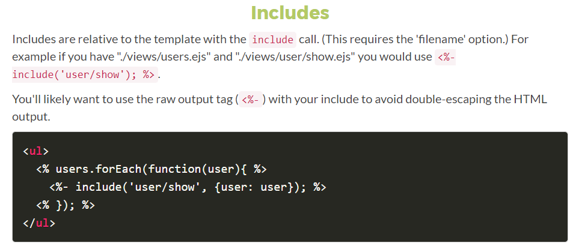
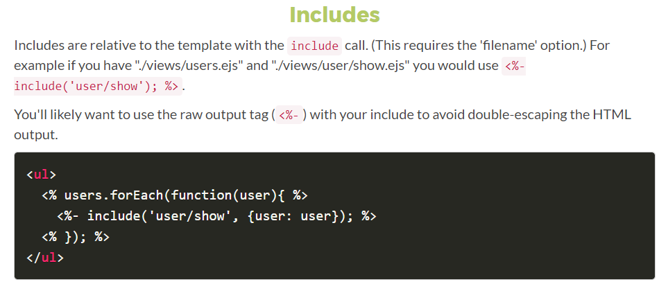

Notes on DEV
Sources - Regular reads
How it started - Beginner's advice
GOV.UK links
Angular - React - Vue
Choosing the Right Javascript Framework for your next Web Application
Angular
React
Vue
Declarative bindings:
- simplify development
- remove the burden of managing the DOM
- updates happen automatically
- super small, library as well, so easy to download and access
BEM
On smaller brochure sites, how you organize your styles isn’t usually a big concern. You get in there, write some CSS, or maybe even some SASS. You compile it all into a single stylesheet with SASS’s production settings, and then you aggregate it to get all the stylesheets from modules into a nice tidy package.
However, when it comes to larger, more complex projects, how you organize your code is the key to efficiency in at least these three ways: it affects how long it takes you to write code, how much of that code you’ll have to write and how much loading your browser will have to do. This becomes especially important when you’re working with teams of themers, and when high performance is essential.
There are plenty of methodologies out there aiming to reduce the CSS footprint, organize cooperation among programmers and maintain large CSS codebases.
No matter what methodology you choose to use in your projects, you will benefit from the advantages of more structured CSS and UI. Some styles are less strict and more flexible, while others are easier to understand and adapt in a team.

Benefits
Modularity: Block styles are never dependent on other elements on a page, so you will never experience problems from cascading.
Reusability: You also get the ability to transfer blocks from your finished projects to new ones.
Composing independent blocks in different ways, and reusing them intelligently, reduces the amount of CSS code that you will have to maintain.
With a set of style guidelines in place, you can build a library of blocks, making your CSS super effective.
Structure: BEM methodology gives your CSS code a solid structure that remains simple and easy to understand.
Naming
Element two underscore, and modifier: two dashes

Chrome Dev Tools
The DevTools provide web developers deep access into the internals of the browser and their web application. Use the DevTools to efficiently track down layout issues, set JavaScript breakpoints, and get insights for code optimization.
Accessing the DevTools
There are several useful shortcuts for opening the DevTools:
Use Ctrl+Shift+I (or Cmd+Opt+I on Mac) to open the DevTools.
Use Ctrl+Shift+J (or Cmd+Opt+J on Mac) to open the DevTools and bring focus to the Console.
Use Ctrl+Shift+C (or Cmd+Shift+C on Mac) to open the DevTools in Inspect Element mode, or toggle Inspect Element mode if the DevTools are already open.
To get an extra console window, type 'esc'. In the menu on the right, there is 'rendering and search options which are very useful
In Network, when looking at load time, you might want to tick 'disable cache'
On the performance tab, you can record, it gives a lot of information about what is happening when loading a page.
To search sources (pictures etc...) select the 'source' tab, then command P for a mac (ctrl P for a PC)
To search within code source: ctrl shit F (cmd opt F for mac)
Go to a line in a source file: ctrl G (cmd L for mac)
Selecting element sin the console: $('div') returns the first, $$('p') returns them all
Device mode
DevTools includes a powerful mode for developing mobile friendly pages. This video from Google goes through most of its main features such as screen resizing, touch emulation and bad network connections simulator.
https://www.youtube.com/watch?v=FrAZWiMWRa4
Device emulation sensors
Another cool feature of Device Mode is the option to simulate mobile devices' sensors like touch screens and accelerometers. You can even spoof your geographic location. The feature is located in the bottom part of the Elements tab under Emulation -> Sensors.
Color Picker
When selecting a color in the Styles editor you can click on the color preview and a picker will pop up. While the color picker is opened, if you hover over your page, your mouse pointer will transform into a magnifying glass for selecting colors with pixel accuracy.
DevTools has a feature that simulates CSS states like :hover and :focus on elements, making it easy to style them. It is available from the CSS editor.
Change color format
Use Shift + Click on the color preview to alter between rgba, hsl and hexadecimal formatting.
Change for no Javascript:
menu 3 dots on the right, then settings (F1) on the left, debugger
No internet or low broadband:
- responsive, and then menu 3 dots and Add Network Throttling
- or settings like above and Throttling with specific values,
- or in Network
accessibility:
chrome tools, last top section is Audit, include accessibility

More on the subject:
https://developers.google.com/web/tools/chrome-devtools/
https://tutorialzine.com/2015/03/15-must-know-chrome-devtools-tips-tricks
https://developer.chrome.com/devtools/index
https://developers.google.com/web/tools/chrome-devtools/network-performance/
https://stories.jotform.com/how-to-use-chrome-devtools-like-a-pro-b9bd414870e3
Use $_ to reference the return value of the previous operation executed in the Console
Select an element and press cmd-shift-p (or ctrl-shift-p in Windows) to open the Command Menu, and select Capture node screenshot.
To write commands that span over multiple lines in the Console, press shift-enter. Once you’re ready, press enter at the end of the script to execute it
Instead of writing again and again a variable name or an expression you are going to check a lot during a debug session, add it to the Watch Expression list.
CSS - Animation and transitions
Cascading Style Sheets - 3 ways to modify the format, 3 type of selectors:
the tagbody, the class .special, or the id (should be unique) #message
if only two values then top and bottom same and left and right same
padding adds to the width and height, it puts some space within the div so the text is not too close from the edges.
border, add to the div size (it's a line, with a size px, a style and a radius
px is an absolute size. em is a relative size. 1.3em means a third larger than whatever came before it.
Best practice is to set one fixed size (for the body for example, in px) and then to use relative size for the rest (div) using em.
to make a circle: radius should be half the weight and width.
to add an image to a boxed text:
.boxed { background-image:url (fries.jpg); } will automatically repeat the image (can be changed by changing the background-repeat property)
External CSS filekeep it seperate so it's easier to see and prevent the browser having to load it each time. Stylesheets needs to be kept small and neat, better when in a external file (minify CSS) to avoid long loading time for the page (usually, once loaded, it's usually kept in the cache to speed up things
Transistion and animations
transition-duration
initial state
.box {
height: 100px;
width: 100px;
background-color: red;
-webkit-transition-transition-property: background-color;
-moz-transition-transition-property: background-color;
-o-transition-transition-property: background-color;
-mz-transition-transition-property: background-color;
transition-property: background-color;
transition-duration: 1s;
}
final state
.box: hover {
height: 100px;
width: 100px;
background-color: blue;
}
vendor prefixes
webkit // Chrome safari
moz // firefox
o // opera
ms // IE
}
Caniuse.com to make sure you can use a transition
Shorthand: one property name and the rest after: (just like border for example, instead of border-right, border-style width...color...some can be required, other are optional
CSS Transform
CSS transforms allow you to translate, rotate, scale, and skew elements.
https://www.w3schools.com/css/css3_2dtransforms.asp
A transformation is an effect that lets an element change shape, size and position.
skew (), scale(), rotate (), translate ()
timing functions: ease, linear, case-in case-out, case-in-out
jQuery
More than just an API to work with the DOM.
jQuery is a JavaScript library that makes it easy to add dynamic behavior to HTML elements.
jQuery is case sensitive
$ is the same as jQuery, so $ is a shortcut, so it tells we're accessing the Jquery library jQuery works in set: use a selector (# or . in quotes) and than changes things.
CSS: pseudo class reflect a specific state of an element: :hover :first-child ....
jQuery.com library to makes the most of Javascript functions, lots of plugging for interactive webapps - it's a layer above javascript mostly used to manipulate the DOM (Document Object Model) easily. We can select / modify elements, attach event handlers and work with form.
When downloading JQuery, make sure it's the minified version (production one and not the development one) to avoid long uploading time for your page.
to add in the html: <script type="text/javascript" src="http://code.jquery.com/jquery-latest.min.js"></script> or if you have downloaded the file: <script type="text/javascript" src="jquery.js"></script>
to select an element in the document: $(document).ready(function() { blabla;});
$('#name of div).property etc...
$('.name of class). etc....
regex, get , animation, fade etc..
jqueryui.com for widgets (just call like above):
<script type="text/javascript" src="http://ajax.googleapis.com/ajax/libs/jqueryui/1.10.4/jquery-ui.min.js""></script>
draggables, reziable, droppable, accordion (each div fold) and sortables (to move elements on screen).
jQuery component, web app on the client side
jQuery UI is above and deals with: effects, widgets, themes, date pickers, menu, progress bars, plugins...
above: customs libraries
JavaScript - Guidelines
Strict mode
Strict mode should always be invoked in your javascript
Naming Conventions
Variable names should always use camel case e.g. locationsLength
Const (constants) names should always use uppercase e.g. PI
Constructors names should always use title case e.g. Person
Use sensible and descriptive names for functions and variables. Conversely, if the name is too long due to you trying to describe what the function does, then consider abstracting some functionality out into other functions.
DRY/WET code
You should always abstract out your functionality until the level of seperation reaches a logically end. e.g. checkPersonsNameAgeAndHeight() could be:
function checkPerson(person) {
checkName(person)
checkAge(person)
checkHeight(person)
}
if there is a logical reason to abstract these functions anymore then do so.
Abstraction is to avoid a WET (write everything twice) codebase. If it is written twice, then put it in a function and call it twice. We want a DRY(dont repeat yourself) codebase. Abstraction is your friend.
String quotes
You can use either a " or a ' to surround your string literals. Please stick to one in your code to aid readability. It is recommended to use single quotes ' to surround your string literals so that you are able to use double quotes " in any strings that may be building elements and the like.
Comparisons
Always use triple equals when doing comparisons. Double equals compare the value of the things being compared and not the types. This is a more robust way of comparing things as type coersion is avoided and you are in control of what is truly being compared.
Variable/function hoisting
Variable and function hoisting is when the compiler reorders all your variable declarations and function declaration to be at the top of the current scope (i.e. in the current function). If this is not thought about when writing code, it can lead to unexpected results due to variable being declared before you expect them to be. As a safety measure (and also for organisational reasons), declare your vars, and functions at the top of the scope. This does not mean that you must assign a value to these variables when they are declared, values can be assigned later. e.g.
Variable declarations are hoisted, but assignments are not. All function definitions are hoisted, so you should put them at the top anyway.
Group var statements
group all your var statements at the top of the function scope using the comma-delimiting declaration syntax. it saves on file size and is just as readable.
(function runAPPIIFE() {
var x, // description of what this is for
y, // description of what this is for
foo = 'foo', // description of what this is for
bar, // description of what this is for
index = 0; // description of what this is for
})();
Semi-colons
Always use semi-colons! Omitting semi-colons can (and will) lead to unexpected behaviour in your code.
Curly braces
use curly braces even writing code blocks that make them optional. e.g.
if(x === y) {
z = 10;
}
Anonymous functions
Always give your functions a name.
Comments
If it is not immediately obvious how something works at first glance, then comment your code.
Separation of concerns
Never use javascript to directly apply any representational changes. Use CSS in your separate style sheet to style the element differently and then use javascript to apply the class needed. This will ensure that any styling changes only need to be done in the CSS files and nowhere else.
Avoid excessive nesting
If statements within if statements within for loops... This can be avoided by abstracting your functionality in to multiple smaller modules or functions that deal with each task within the code.
Creating objects and arrays
creating an empty object? use {} and dont use new Object();
creating an empty array? use [] and dont use new Array();
When creating an object with key value pairs, always put your keys in single quotes. This is to avoid any keyword/reserved word clashes.
Ternary statements
If you need to assign a value to a variable, and that value changes depending on another, then use a ternary statement to do the assignment.
var isAllowed = (age > 18) ? "yes": "no";
The benefit of a ternary is that it is less code, and you can do a declaration and condition-dependant assignment on one line. The first statement after the question mark (the "yes") is what will be assigned if the preceding condition evaluates to true, the second statement (the "no") is what will be assigned if the condition evaluates to false.
Checking to see if something is truthy can simply be done like this:
var duration = x || 4;
This is checking if the x variable has a truthy value, if it does, assign it to duration, else assign 4 to duration. If you need to assign 0 to duration, then this approach would not work as 0 is a falsy value and therefore it would fall through to the 4 being assigned to duration.
You can also use this syntax to do an inline-if statement:
var duration = hasDuration && x;
This checks to see if hasDuration is a truthy value, if it is, then it falls through to the next part and assigns the value of x to duration
Loops
Don't declare variables (where possible - should be 99% of cases) in the loop block itself. Declare them outside of the loop. If iterating through the length of an array, cache the array length in a variable and use that in the loop declaration, this will speed it up.
Sanitise your inputs and parameters
Always assume that the data being fed in to a function is wrong and do the appropriate checks on it to make sure it won't break when run. Always check for null and undefined values.
JavaScript - Promises
https://codeburst.io/a-simple-guide-to-es6-promises-d71bacd2e13a
We have a problem with promises
Promises are a pattern that greatly simplifies asynchronous programming by making the code look synchronous and avoid problems associated with callbacks.
A Promise is an object that is used as a placeholder for the eventual results of a deferred (and possibly asynchronous) computation.
We create a promise when a certain task’s completion time is uncertain or too long.
PWA - Progressive Web App
Some links to check:
- Beyond SPAs: alternative architectures for your PWA
- Progressive Web apps
- Your First Progressive Web App
- Going offline
- Yes that web project should be a PWA
- Progressive Web Apps: Bridging the gap between web and mobile apps
- Progressive Web Apps on iOS are here
- Progressive Web Apps on iOS are here
Service workers
A service worker is a script that your browser runs in the background, separate from a web page, opening the door to features that don't need a web page or user interaction. Today, they already include features like push notifications and background sync. In the future, service workers might support other things like periodic sync or geofencing.
The reason this is such an exciting API is that it allows you to support offline experiences, giving developers complete control over the experience.
Things to note about a service worker:
- it's a JavaScript Worker, so it can't access the DOM directly. Instead, a service worker can communicate with the pages it controls by responding to messages sent via the postMessage interface, and those pages can manipulate the DOM if needed
- service worker is a programmable network proxy, allowing you to control how network requests from your page are handled
- it's terminated when not in use, and restarted when it's next needed, so you cannot rely on global state within a service worker's onfetch and onmessage handlers. If there is information that you need to persist and reuse across restarts, service workers do have access to the IndexedDB API
- service workers make extensive use of promises
After the activation step, the service worker will control all pages that fall under its scope, though the page that registered the service worker for the first time won't be controlled until it's loaded again. Once a service worker is in control, it will be in one of two states: either the service worker will be terminated to save memory, or it will handle fetch and message events that occur when a network request or message is made from your page.
Using service worker you can hijack connections, fabricate, and filter responses. Powerful stuff. While you would use these powers for good, a man-in-the-middle might not. To avoid this, you can only register service workers on pages served over HTTPS, so we know the service worker the browser receives hasn't been tampered with during its journey through the network.
Register a service worker
To install a service worker you need to kick start the process by registering it in your page. This tells the browser where your service worker JavaScript file lives.
Install a service worker
After a controlled page kicks off the registration process, let's shift to the point of view of the service worker script, which handles the install event.
For the most basic example, you need to define a callback for the install event and decide which files you want to cache.
Inside of our install callback, we need to take the following steps:
- open a cache
- cache your files
- confirm whether all the required assets are cached or not
If all the files are successfully cached, then the service worker will be installed. If any of the files fail to download, then the install step will fail. This allows you to rely on having all the assets that you defined, but does mean you need to be careful with the list of files you decide to cache in the install step. Defining a long list of files will increase the chance that one file may fail to cache, leading to your service worker not getting installed.
Cache and return requests
After a service worker is installed and the user navigates to a different page or refreshes, the service worker will begin to receive fetch events, an example of which is below.
Update a service worker There will be a point in time where your service worker will need updating. When that time comes, you'll need to follow these steps:
- update your service worker JavaScript file. When the user navigates to your site, the browser tries to redownload the script file that defined the service worker in the background. If there is even a byte's difference in the service worker file compared to what it currently has, it considers it new
- your new service worker will be started and the install event will be fired
- at this point the old service worker is still controlling the current pages so the new service worker will enter a waiting state
- when the currently open pages of your site are closed, the old service worker will be killed and the new service worker will take control
- once your new service worker takes control, its activate event will be fired
Rest API
API: application programming interface = a way to provide a system with a programmatic means to access specific data or functionality from another system.
A RESTful API -- also referred to as a RESTful web service -- is based on representational state transfer (REST) technology, an architectural style and approach to communications often used in web services development.
REST technology is generally preferred to the more robust Simple Object Access Protocol (SOAP) technology because REST leverages less bandwidth, making it more suitable for internet usage. An API for a website is code that allows two software programs to communicate with each another. The API spells out the proper way for a developer to write a program requesting services from an operating system or other application.
The REST used by browsers can be thought of as the language of the internet. With cloud use on the rise, APIs are emerging to expose web services. REST is a logical choice for building APIs that allow users to connect and interact with cloud services. RESTful APIs are used by such sites as Amazon, Google, LinkedIn and Twitter.
A RESTful API breaks down a transaction to create a series of small modules. Each module addresses a particular underlying part of the transaction. This modularity provides developers with a lot of flexibility, but it can be challenging for developers to design from scratch. Currently, the models provided by Amazon Simple Storage Service, Cloud Data Management Interface and OpenStack Swift are the most popular.
A RESTful API explicitly takes advantage of HTTP methodologies defined by the RFC 2616 protocol. They use GET to retrieve a resource; PUT to change the state of or update a resource, which can be an object, file or block; POST to create that resource; and DELETE to remove it.
With REST, networked components are a resource you request access to -- a black box whose implementation details are unclear. The presumption is that all calls are stateless; nothing can be retained by the RESTful service between executions.
Because the calls are stateless, REST is useful in cloud applications. Stateless components can be freely redeployed if something fails, and they can scale to accommodate load changes. This is because any request can be directed to any instance of a component; there can be nothing saved that has to be remembered by the next transaction. That makes REST preferred for web use, but the RESTful model is also helpful in cloud services because binding to a service through an API is a matter of controlling how the URL is decoded. Cloud computing and microservices are almost certain to make RESTful API design the rule in the future.
To implement REST:

Hash: Producing hash values for accessing data or for security. A hash value (or simply hash), also called a message digest, is a number generated from a string of text. The hash is substantially smaller than the text itself, and is generated by a formula in such a way that it is extremely unlikely that some other text will produce the same hash value. Hashes play a role in security systems where they're used to ensure that transmitted messages have not been tampered with. The sender generates a hash of the message, encrypts it, and sends it with the message itself. The recipient then decrypts both the message and the hash, produces another hash from the received message, and compares the two hashes. If they're the same, there is a very high probability that the message was transmitted intact. Hashing is also a common method of accessing data records.
Templating languages for JS
Differences between HandlebarsJS and Mustache
http://mustache.github.io/mustache.5.html
EJS - Effective JavaScript Templating
EJS
How to use EJS in a nodeJS application
 

Miscellaneous
CSFR
Dependency injection
In software engineering, dependency injection is a technique whereby one object (or static method) supplies the dependencies of another object. A dependency is an object that can be used (a service). An injection is the passing of a dependency to a dependent object (a client) that would use it. The service is made part of the client's state. Passing the service to the client, rather than allowing a client to build or find the service, is the fundamental requirement of the pattern.
The intent behind dependency injection is to decouple objects to the extent that no client code has to be changed simply because an object it depends on needs to be changed to a different one.
Reasons for using Dependency Injection:
- decoupling: Dependency injection makes your modules less coupled resulting in a more maintainable codebase
- easier unit testing: Instead of using hardcoded dependencies you can pass them into the module you would like to use. With this pattern in most cases, you don't have to use modules like proxyquire
- faster development: With dependency injection, after the interfaces are defined it is easy to work without any merge conflicts
Head tag
Hidden
Form variables. These fields should not be rendered and provide a mean for servers to store state information with a form. This will be passed back to the server when the form is submitted, using the name/value pair defined by the corresponding attributes. This is a work around for the statelessness of HTTP. Another approach is to use HTTP "Cookies".
<input type=hidden name=customerid value="c2415-345-8563">
HTML - forms
<form method="post" action="http//....where to submit the form ..."> ...... </form>
<label for="name of the control">text of the label </label>
Best practice is to create a label for any input we have, better for any user as it explains what you need and might format better depending on the device/browser, plus, for accessibility, this will help screen readers.
The name attribute (for input, text area, select...) will be useful once the server is trying to access things from the form. To group two control, give them the same name attribute (will be transmitted by a GET)
HTML infographic

JSON
JSON Schema is a powerful tool for validating the structure of JSON data.
Here are two representations:
{
"name": "George Washington",
"birthday": "February 22, 1732",
"address": "Mount Vernon, Virginia, United States"
}
{
"first_name": "George",
"last_name": "Washington",
"birthday": "1732-02-22",
"address": {
"street_address": "3200 Mount Vernon Memorial Highway",
"city": "Mount Vernon",
"state": "Virginia",
"country": "United States"
}
}
Here is the JSON schema fragment which describes how the second one is structured:
{
"type": "object",
"properties": {
"first_name": { "type": "string" },
"last_name": { "type": "string" },
"birthday": { "type": "string", "format": "date-time" },
"address": {
"type": "object",
"properties": {
"street_address": { "type": "string" },
"city": { "type": "string" },
"state": { "type": "string" },
"country": { "type" : "string" }
}
}
}
}
You may have noticed that the JSON Schema itself is written in JSON. It is data itself, not a computer program. It’s just a declarative format for “describing the structure of other data”.
In that link above, guidance about combining different structure to get a complex schema.
Layout
Positioning:
Block elements: <p> <div> <blockquote> <ul> <ol> the next element will be placed under it
in-line elements: <span> <input> <button> <strong> <em> the next element will be place next to it.
This default positioning (static) can be changed to: Absolute, relative and fixed.
Absolute: gives the distances from the document, not the actual window.
Fixed: gives the distance from the browser window, not the document.
Relative: how far from the previous/parent elements.
list number style - how to change it
PHP = server side scripting language = hypertext processor
HTML, CSS and javascript happen on the computer, interpreted there. PHP is a server side language. Server side = back end (business logic) this is sending email, saving info to a database.
php.net is a good resource.
make a folder php, and in it index.php
<?php code php; ?>
echo 'text to appear';
This can be a way to protect your code as it won't be visible for the user.
php.ini is a file where the server will look to see if you have anything special setting in place
Tip: to get errors in our PHP code while building the website, use the php.ini with content:
displayerror = on
display
once the code is good, remove the ini file to prevent other people to access our code.
variable start with $
$test="I'm a variable"; echo $test;
Placeholder
Using the placeholder attribute
The placeholder attribute:
- can’t be automatically translated
- is often used in place of a label, locking out assistive technology
- can hide important information when content is entered
- can be too light-colored to be legible
- has limited styling options
- may look like pre-filled information and be skipped over
Solution: Move the placeholder content above the input, but below the label
Redux
As the requirements for JavaScript single-page applications have become increasingly complicated, our code must manage more state than ever before. This state can include server responses and cached data, as well as locally created data that has not yet been persisted to the server. UI state is also increasing in complexity, as we need to manage active routes, selected tabs, spinners, pagination controls, and so on.
Managing this ever-changing state is hard. If a model can update another model, then a view can update a model, which updates another model, and this, in turn, might cause another view to update. At some point, you no longer understand what happens in your app as you have lost control over the when, why, and how of its state. When a system is opaque and non-deterministic, it's hard to reproduce bugs or add new features.
Redux (state management) attempts to make state mutations predictable by imposing certain restrictions on how and when updates can happen. These restrictions are reflected in the three principles of Redux.
Redux can be described in three fundamental principles:
- single source of truth - The state of your whole application is stored in an object tree within a single store
- state is read-only - The only way to change the state is to emit an action, an object describing what happened
- changes are made with pure functions - To specify how the state tree is transformed by actions, you write pure reducers
SAML - Security Assertion Markup Language
It's an open standard for exchanging authentication and authorization data between parties, in particular, between an identity provider and a service provider. Beyond what its name suggests, SAML is each of the following:
- an XML-based markup language (for assertions etc.)
- a set of XML-based protocol messages
- a set of protocol message bindings
- a set of profiles (utilizing all of the above)
- the single most important use case that SAML addresses is web browser single sign-on (SSO). Single sign-on is relatively easy to accomplish within a security domain (using cookies, for example) but extending SSO across security domains is more difficult and resulted in the proliferation of non-interoperable proprietary technologies. Hence the SAML Web Browser SSO profile was specified and standardized. (For comparison, the more recent OpenID Connect protocol[2] is an alternative approach to browser SSO.)
Single page application
The 4 Layers of Single Page Applications You Need to Know
View vs redirect
In the same controller just content then view. Redirect URL to the controller which will do the work.
When you return a view you are responding to a uri. For example, when someone access the /about uri you respond by returning a view.
A redirect is actually changing the uri which means you actually invoke another controller's method. The norm is to return a View when you use a GET request and to Redirect somewhere after you've sent a POST request.
Virtual DOM
The difference between virtual DOM and DOM
Codecademy - React virtual DOM
The HTML DOM is always tree-structured - which is allowed by the structure of HTML document. This is cool because we can traverse trees fairly easily. Unfortunately, easily doesn’t mean quickly here.
The DOM trees are huge nowadays. Since we are more and more pushed towards dynamic web apps (Single Page Applications - SPAs), we need to modify the DOM tree incessantly and a lot. And this is a real performance and development pain.
A virtual DOM object is a representation of a DOM object, like a lightweight copy.
A virtual DOM object has the same properties as a real DOM object, but it lacks the real thing's power to directly change what's on the screen.
Manipulating the DOM is slow. Manipulating the virtual DOM is much faster, because nothing gets drawn onscreen. Think of manipulating the virtual DOM as editing a blueprint, as opposed to moving rooms in an actual house.
The Virtual DOM is an abstraction of the HTML DOM. It is lightweight and detached from the browser-specific implementation details. Since the DOM itself was already an abstraction, the virtual DOM is, in fact, an abstraction of an abstraction.
View vs redirect
In the same controller just content then view. Redirect URL to the controller which will do the work.
When you return a view you are responding to a uri. For example, when someone access the /about uri you respond by returning a view.
A redirect is actually changing the uri which means you actually invoke another controller's method. The norm is to return a View when you use a GET request and to Redirect somewhere after you've sent a POST request.
Z-index
A non-positioned element is an element with the default position value static. A positioned element is an element with any other position value. Examples of other values are: absolute, relative, sticky or fixed.
Z-index only works with positioned elements.
Adding a z-index value to an element forms what is called a stacking context.
An element with a z-index value other than auto forms a new stacking context. And it affects how its child elements are being displayed.
It is possible to change the stacking order of child elements. However, their z-index only has a meaning within that stacking context.
There are several other properties that cause elements to form stacking contexts. Some examples are: filter, opacity, and transform.